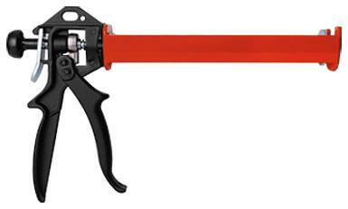
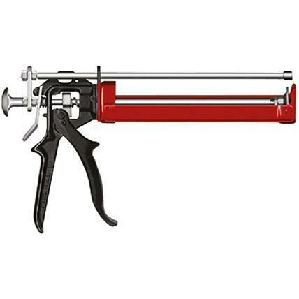
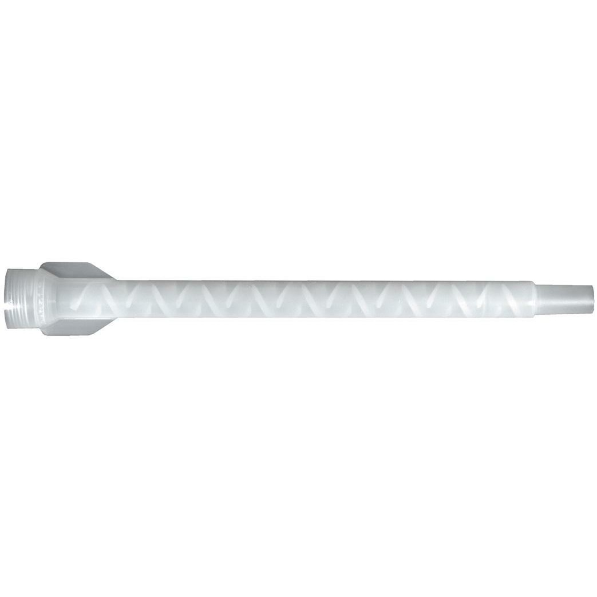
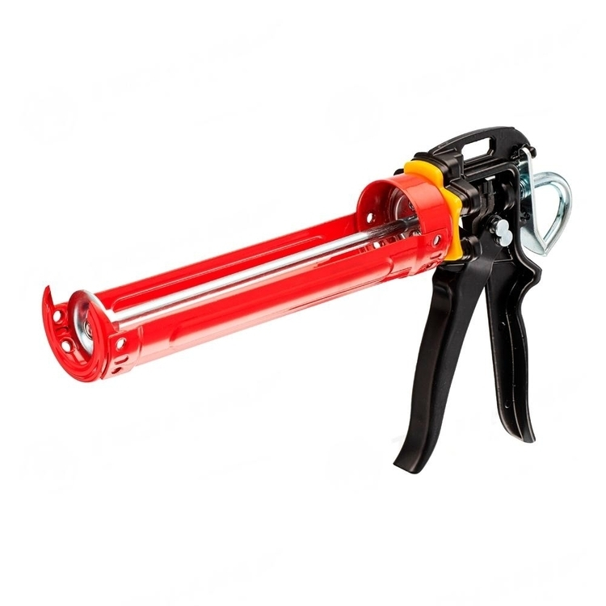
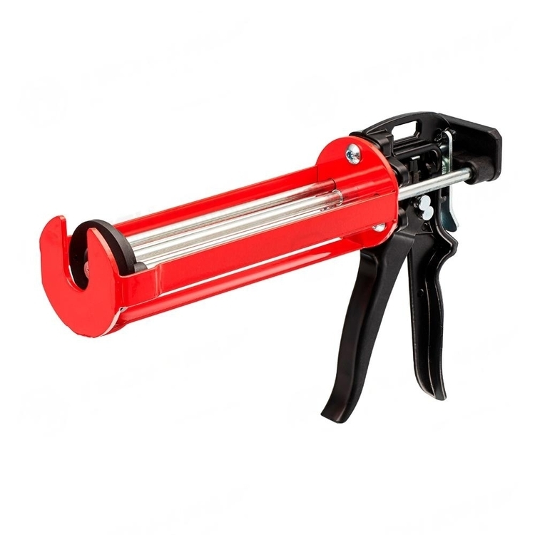
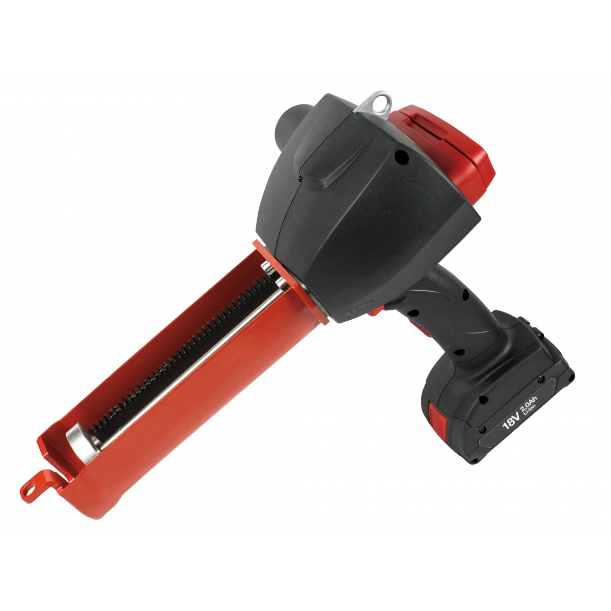
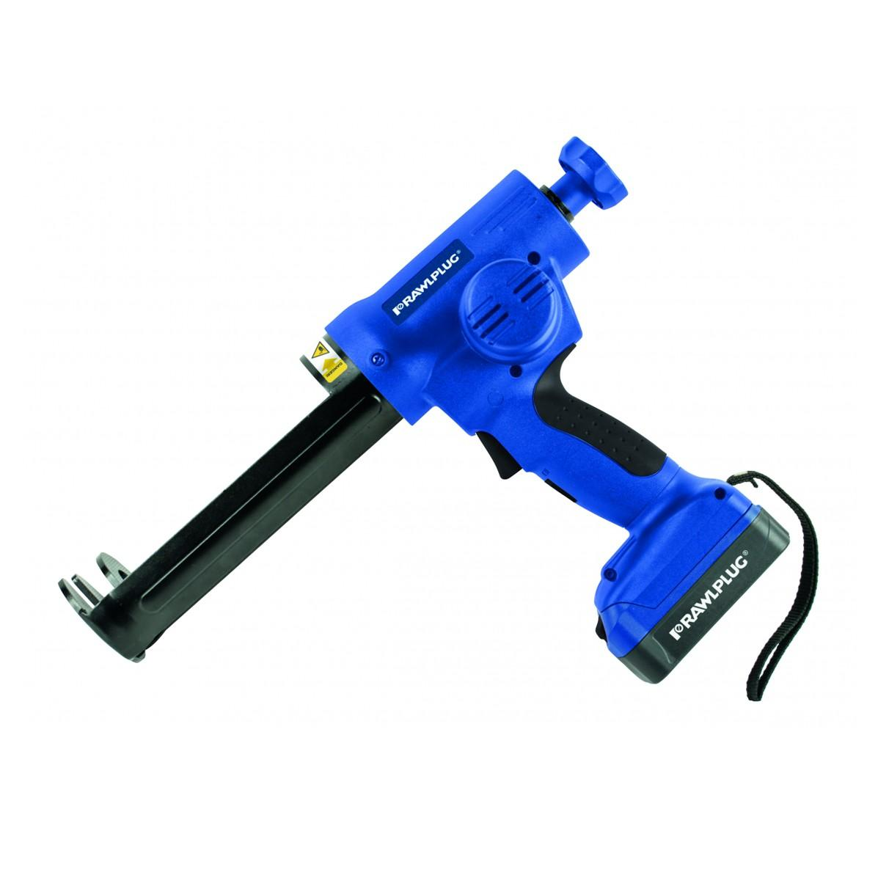
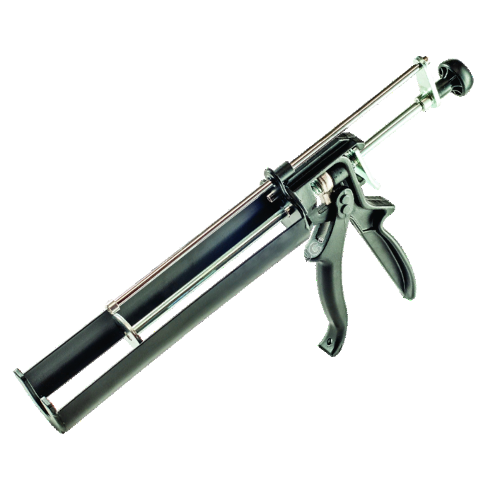

Принадлежности для химических анкеровДозатор для химических анкеров (картриджи 280–310 мл), MKTMKT3 130,88 ₽
Принадлежности для химических анкеровДозатор для химических анкеров (картриджи 380–420 мл), MKTMKT6 081,53 ₽
Принадлежности для химических анкеровДозатор для химических анкеров (картриджи 440, 585 мл), MKTMKT13 318,20 ₽
Принадлежности для химических анкеровVM-XL Смеситель для картриджа VME (385, 585 мл)VME449,15 ₽
Принадлежности для химических анкеровПистолет для химического анкера, Tech-krepTech-KrepЦена по запросу
Принадлежности для химических анкеровПистолет для двухкомпонентного химического анкера, Tech-krepTech-KrepЦена по запросу
Принадлежности для химических анкеровВтулка под химический анкер с внутренней резьбой A4 16х1252 229,42 ₽
Принадлежности для химических анкеровАккумуляторный дозатор для хим. анкеров R-KEX II279 494,40 ₽
Принадлежности для химических анкеровАккумуляторный пистолет с функцией запоминания дозы для хим.анкеров 380333 473,68 ₽
Принадлежности для химических анкеровАккумуляторный пистолет для хим.анкеров 380133 387,25 ₽
Принадлежности для химических анкеровПистолет для механический дозирования хим.анкеров 380, 400,4106 398,40 ₽
Принадлежности для химических анкеровВтулка под химический анкер с внутренней резьбой A4 10х1001 006,78 ₽
Принадлежности для химических анкеровРучной пистолет для зарядки картриджей 175, 3006 322,30 ₽
Принадлежности для химических анкеровРучной пистолет для зарядки 600. стандартный R-GUN-600-P8 890,41 ₽
Принадлежности для химических анкеровВтулка под химический анкер с внутренней резьбой A4 6х75336,18 ₽
Принадлежности для химических анкеровВтулка под химический анкер с внутренней резьбой A4 10х75778,53 ₽
Принадлежности для химических анкеровВтулка под химический анкер с внутренней резьбой A4 8х90525,51 ₽
Принадлежности для химических анкеровВтулка под химический анкер с внутренней резьбой A4 12х1001 042,17 ₽
Принадлежности для химических анкеровПистолет для пневматического дозирования хим.анкеров 38088 924,09 ₽
Принадлежности для химических анкеровВтулка под химический анкер с внутренней резьбой A4 8х75437,04 ₽